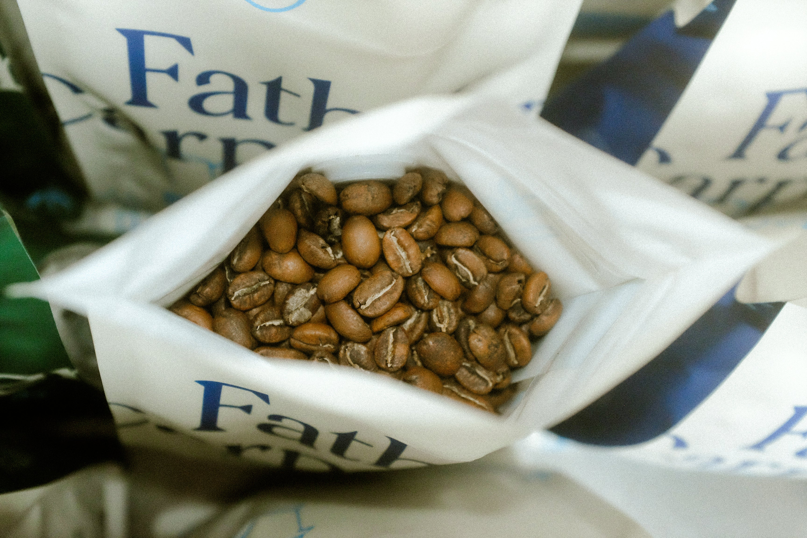

Shops & Sanctuaries

The Store X
Open in Maps Open SiteInside the Jonass Building. High-end curation, rare vinyl, and minimalist vibes.

Father Carpenter
Open in Maps Open SiteStylish caffeine fix tucked in a stunning blue-tiled courtyard in Mitte.

Voo Store
Open in Maps Open SiteIndustrial chic in a Kreuzberg backyard. World-class fashion selection.